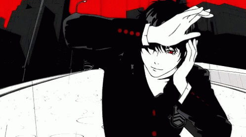

This game oozes style. From the vibrant colours, to the magnificent soundtrack, Persona 5 is a delight for all the senses. Persona 5 is a Japanese Role Playing Game that mixes dungeon crawling, visual novels and life simulation all into one glorious package that is topped off with fully animated cutscenes that feel as though they could be their own full-fledged anime.
The game begins flashy, the protagonist is in the middle of a casino heist that has gone south, and ultimately leads to his arrest. The opening half of the game is cleverly executed, as each chapter is basically the protagonists answer to the questions that are being asked of him while he is in custody. This continues until the story has caught up the player of the events that led to his arrest and then develops the story further from that point.
The player forms a group known as the Phantom Thieves with his friends with the main goal of changing the heart of evil people by literally entering a dungeon that is formed from their dark desires. The bulk of the gameplay revolves around the player building relationships and bonds with his friends which can then be used to boost his fighting ability within the dungeons. Each social link has 10 levels and offers very fulfilling character development. The dungeon crawling is no slouch either. The turn-based action is similar to that of Pokemon, as the user can collect different “Personas” that have varying strengths and weaknesses. They can even be fused together to create a whole new Persona.
Often dubbed as one of the greatest Role Playing Games ever created, Persona 5 and its successor Persona 5 Royal, are not to be missed.